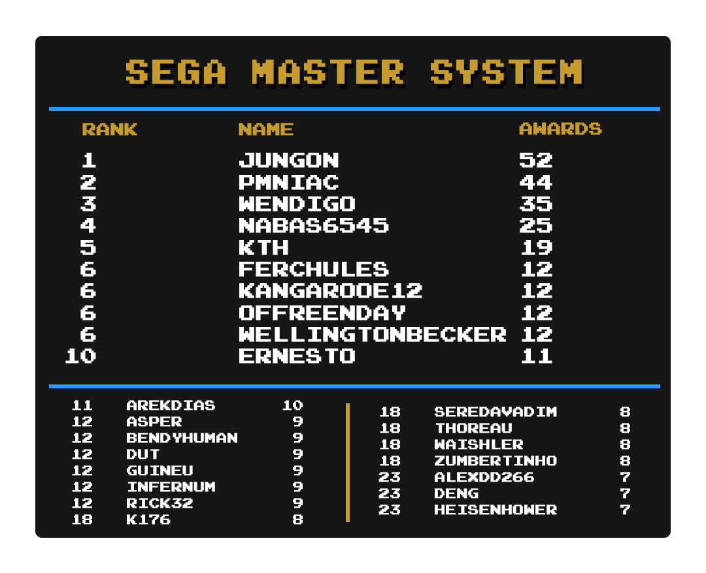

Top Masteries
 By
MrOwnership
By
MrOwnership
Contents
- Intro
- Current Champions
- Category Rankings
Intro
We are going to take a look at another metric for greatness, Mastery Awards. Mastery awards are given to users when they complete every achievement for a given set in hardcore mode. Users wear mastery awards as a badge of honor on their profile page representing all the hard work they put into truly becoming a master of the game.
Below we will take a look at which users rank among the best with the most mastery awards in several categories well as notable updates from the previous month to each individual category. Check to see how you rank among the rest of the community members.
Special thanks to  Nydaxn for creating the ranking images.
Nydaxn for creating the ranking images.
Updates
- We have decided to remove ~Hack~ mastery awards from the individual leaderboards given that they have their own leaderboard.
- There will now be two Total leaderboards, one including hacks and one excluding hack.
- Events Leaderboard will now be featured each month.
- The Current Champions list below will now include all supported consoles, giving recognition to those who have the most mastery awards for some of the consoles with only a few achievement sets.
Current Champions
|
|
|
Mastery Awards |
|---|---|---|
| Total Awards |
 guineu & guineu &  MaxMilyin MaxMilyin
|
596 |
| 3DO Interactive Multiplayer | guineu |
4 |
| Apple II | guineu |
11 |
| Arcade |  DUT DUT |
47 |
| Atari 2600 |  PMniac PMniac |
85 |
| Atari 7800 | PMniac |
7 |
| Atari Jaguar | PMniac |
3 |
| Atari Lynx |
guineu,  russolini77, & russolini77, &  jared6502 jared6502
|
3 |
| ColecoVision | PMniac |
7 |
| Events |  televandalist televandalist |
23 |
| Game Boy |  Shootzy Shootzy |
110 |
| Game Boy Advance |  bonecrusher1022 bonecrusher1022 |
98 |
| Game Boy Color | guineu |
43 |
| Game Gear | Nydaxn |
42 |
| Hack Champ |  HolyShinx HolyShinx |
178 |
| Homebrew Champ |  AuburnRDM AuburnRDM |
95 |
| Intellivision | guineu |
7 |
| Magnavox Odyssey 2 | guineu |
3 |
| Master System |  Jungon Jungon |
52 |
| Mega Drive | DUT |
97 |
| MSX |  Blazekickn Blazekickn |
5 |
| N64 |  Aquator Aquator |
34 |
| Neo Geo Pocket |  Nanashi Nanashi |
4 |
| NES |  SanMarino SanMarino |
225 |
| Nintendo DS |
 Olafur & Olafur &  ShadwSonic ShadwSonic
|
26 |
| PC Engine |  Infernum Infernum |
30 |
| PC-8000/8800 |  malasdair malasdair |
8 |
| PC-FX |  Annonith Annonith |
2 |
| PlayStation |  Alexxi Alexxi |
73 |
| PlayStation Portable |  minibt minibt |
17 |
| Pokémon Mini |  Nevermond12 Nevermond12 |
12 |
| Sega 32X |
 AgentRibinski & AgentRibinski &  Nevanos Nevanos
|
2 |
| Sega Saturn |  Boldewin Boldewin |
13 |
| Sega CD | Infernum |
4 |
| SG-1000 | PMniac |
6 |
| SNES |  danibodom danibodom |
152 |
| Vectrex |  QRS666 QRS666 |
2 |
| Virtual Boy |
 Grahamtams & Grahamtams &  multonic multonic
|
4 |
| Watara Supervision |  Sarconius Sarconius |
41 |
| WonderSwan | ShadwSonic |
2 |
Category Rankings
Total Awards (Including Hacks)

-
guineu has jumped up to a 1st place tie with MaxMilyin with 596 mastery awards.
-
ShadwSonic has jumped up 3 spots with 32 new mastery awards this month.
-
 Searo has made it into the top 25 and is sitting at 22nd place with 31 new mastery awards this month.
Searo has made it into the top 25 and is sitting at 22nd place with 31 new mastery awards this month.
Total Awards (Excluding Hacks)

- Not much to talk about here as this is a new leaderboard. guineu, MaxMilyin and Sarconius currently have the top 3 spots.
-
 Xymjak is 1 mastery award away from the podium.
Xymjak is 1 mastery award away from the podium.
Notable Milestones
- Congratulations to Infernum for reaching over 400 mastery awards.
- Congratulations to Searo for reaching over 300 mastery awards.
- Congratulations to AuburnRDM,
 WanderingHeiho,
WanderingHeiho,  chocolatiel,
chocolatiel,  FlamingDoom,
FlamingDoom,  Lonoke31,
Lonoke31,  RetroChris81, MrOwnership,
RetroChris81, MrOwnership,  Szhymphild,
Szhymphild,  Skystarmania,
Skystarmania,  JasonVoorhees, and
JasonVoorhees, and  Kaymander for reaching over 100 mastery awards.
Kaymander for reaching over 100 mastery awards.
Events

-
televandalist takes the top spot in the first Events leaderboard with 23 event awards.
-
 SporyTike and
SporyTike and  Hotscrock round out the top 3 with 20 and 19 event awards.
Hotscrock round out the top 3 with 20 and 19 event awards.
Arcade

-
DUT still remains on top with 47 mastery awards.
-
 offreenday has made it into the top 25 with 8 new mastery awards this month and is sitting in a 3-way tie for 13th place.
offreenday has made it into the top 25 with 8 new mastery awards this month and is sitting in a 3-way tie for 13th place.
Atari 2600

-
PMniac continues to extend the 1st place lead with 1 new mastery awards this month, but RetroChris81 is closing in with 3 new mastery awards this month.
-
 BlotchJBMR has made it into the top 25 and is sitting in a 5-way tie for 24th place.
BlotchJBMR has made it into the top 25 and is sitting in a 5-way tie for 24th place.
Game Boy

-
Shootzy remains on top with 110 mastery awards.
-
guineu and MaxMilyin are now tied in second with 88 mastery awards.
-
Searo jumped 12 spots into 10th place.
-
Blazekickn and
 Draco655 both took a hit with the exclusion of hacks, dropping 8 and 11 spots in the leaderboards.
Draco655 both took a hit with the exclusion of hacks, dropping 8 and 11 spots in the leaderboards.
Game Boy Advance
-
bonecrusher1022,
 metalbubble403, Blazekickn,
metalbubble403, Blazekickn,  Braek, and Draco655 all took bit hits with the exclusion of hacks, all losing over 10 mastery awards.
Braek, and Draco655 all took bit hits with the exclusion of hacks, all losing over 10 mastery awards. -
bonecrusher1022 and metalbubble403 are still sitting above the rest even with the large awards decrease.
-
 starlite has made it into the top 25 and is sitting in a 3-way tie for 14th place.
starlite has made it into the top 25 and is sitting in a 3-way tie for 14th place. -
 Thoreau has made it into the top 25 without any new mastery awards this month and is sitting in 23rd place.
Thoreau has made it into the top 25 without any new mastery awards this month and is sitting in 23rd place.
Game Boy Color

-
guineu has taken the 1st place spot from
 Bendyhuman 2 new mastery awards this month.
Bendyhuman 2 new mastery awards this month. -
ShadwSonic has jumped up 9 spots into a 3-way tie for 8th place.
-
 MaddieKittyTV has made it into the top 25 and is sitting in a 5-way tie for 20rd place.
MaddieKittyTV has made it into the top 25 and is sitting in a 5-way tie for 20rd place.
Game Gear

-
Nydaxn remains in 1st place with 8 new mastery awards this month.
-
 dcmpinguim has moved into 3rd place with 9 new mastery awards this month.
dcmpinguim has moved into 3rd place with 9 new mastery awards this month. -
 Waishler has made it into the top 25 and is tied for 7th place.
Waishler has made it into the top 25 and is tied for 7th place. -
 FlareEX have made it into the top 25 and is sitting in a 4-way tie for 12th place.
FlareEX have made it into the top 25 and is sitting in a 4-way tie for 12th place.
Hack Champ
-
HolyShinx still has a commanding lead with 178 mastery awards.
-
Bendyhuman is 1 mastery award away from the podium.
-
ShadwSonic has jumped up 8 spots into a 11th place.
-
BlotchJBMR has made it into the top 25 and is tied in 22nd place.
Homebrew Champ

-
AuburnRDM has taken 1st place by a wide margin with an incredible 56 new master awards this month.
-
Searo has jumped up 12 spots into 6th place with 23 new mastery awards this month.
-
MrOwnership has made it into the top 25 and is sitting at 17th place with 11 new mastery awards this month.
Master System

-
Jungon remains in 1st place with 3 new mastery awards this month.
-
 HeisenHower has made it into the top 25 and is sitting in a 4-way tie for 23rd place.
HeisenHower has made it into the top 25 and is sitting in a 4-way tie for 23rd place.
Mega Drive

-
DUT remains in 1st place even while losing 2 mastery awards.
-
 mikeisafighter in now solely in 3rd place with
mikeisafighter in now solely in 3rd place with  Wendigo losing 6 mastery awards.
Wendigo losing 6 mastery awards. -
 drakonos85 has made it into the top 25 and is sitting in a 3-way tie for 25th place.
drakonos85 has made it into the top 25 and is sitting in a 3-way tie for 25th place.
N64

-
Aquator continues to hold onto the top spot.
-
 xTyrea64 has made it into the top 25 and is sitting in a 7-way tie for 15th place.
xTyrea64 has made it into the top 25 and is sitting in a 7-way tie for 15th place.
NES
-
SanMarino still has a healthy lead in 1st place.
-
 SeredaVadim and mikeisafighter have swapped 2nd and 3rd position.
SeredaVadim and mikeisafighter have swapped 2nd and 3rd position.
Nintendo DS
-
Olafur and ShadwSonic are now tied in 1st place with, taking the spot from Bendyhuman.
-
 Thanks and
Thanks and  tinycyan are now tied in 3rd place with 23 mastery awards.
tinycyan are now tied in 3rd place with 23 mastery awards. -
 Cocojuju13 has made it into the top 25 and is sitting in a 7-way tie for 24th place.
Cocojuju13 has made it into the top 25 and is sitting in a 7-way tie for 24th place.
PC Engine

-
Infernum continues to lead the rankings with 30 mastery awawrds.
-
 marcelosnp has jumped into 9th place with 4 new mastery award this month.
marcelosnp has jumped into 9th place with 4 new mastery award this month. -
guineu has made it into the top 25 and is sitting in a 4-way tie for 17th place.
PlayStation

-
 IantasGames1995 is 1 awards from a 3-way tie for 3rd place.
IantasGames1995 is 1 awards from a 3-way tie for 3rd place. -
 DungeonMaster has made it into the top 25 and is sitting in 22nd place.
DungeonMaster has made it into the top 25 and is sitting in 22nd place.
PlayStation Portable

-
minibt extends the 1st place lead with 3 new mastery awards this month.
-
Lonoke31, Blazekickn,
 vaanxbahn,
vaanxbahn,  Daroachie and Nevermond12 have all joined the top 25 this month.
Daroachie and Nevermond12 have all joined the top 25 this month.
Pokémon Mini

-
Nevermond12 and guineu are still neck and neck with 1 award separating the two.
-
AuburnRDM has made it into the top 25 and is sitting in an 2-way tie for 3rd place.
-
 TheFetishMachine has made it into the top 25 and is sitting in an 8-way tie for 10th place.
TheFetishMachine has made it into the top 25 and is sitting in an 8-way tie for 10th place.
Saturn
-
 Kiparis88, MaxMilyin,
Kiparis88, MaxMilyin,  ParaParaKing,
ParaParaKing,  Retrokaiser and
Retrokaiser and  TheJewker are all now tied in 2nd place
TheJewker are all now tied in 2nd place -
 danilofent97,
danilofent97,  MauricioReis and
MauricioReis and  AlexGatao have all made it into the top 25.
AlexGatao have all made it into the top 25.
SNES
-
danibodom extends their 1st place lead by 6 with 7 new mastery awards this month.
-
 HippopotamusRex has moved into a tie for 8th place.
HippopotamusRex has moved into a tie for 8th place.
Watara Supervision
-
Sarconius still has a healthy lead at the 1st place spot.
-
 freezestar has moved into an 8-way tie for 12th place.
freezestar has moved into an 8-way tie for 12th place. -
Searo has moved into an 4-way tie for 20th place.